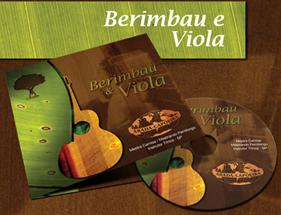

Каподайджест, №3 (30.05)
В этот раз для «Каподайджеста» собралось не так много материала: несколько ссылок, видео и пару коротких новостей. Поэтому буду рад любой вашей помощи в составлении нового выпуска. Присылайте ссылки на интересные материалы о капуэйре и видео мне в личку или на почту, с пометкой „каподайджест“ в теме сообщения. Спасибо!
***
В этом выпуске:
— Видео от Abeiramar.tv: Игра Canguru с Mestre Branco, Mixaria и Itapuã Beiramar
— Блог «O Som Da Capoeira!» с музыкальными новинками
— Двухлетний мальчик занимается капуэйрой
— Вышла книга про местре João Grande
— А вас выбивали в нокаут?
Видео от Abeiramar.tv: Игра Canguru с Mestre Branco, Mixaria и Itapuã Beiramar
Пока свежих видео с прошедшей недавно встречи «Movemento Novo» ещё нет. Но зато Beiramar на своём сайте опубликовал не менее интересную игру с участием себя самого Mestre Branco, Mixaria и Canguru.
Блог „O Som Da Capoeira!“ с музыкальными новинками

Хочу поделиться ещё одним интересным ресурсом с музыкой. «O Som Da Capoeira!» — португалоязычный блог, где примерно раз в месяц публикуются ссылки на новые альбомы. Так недавно был опубликован альбом «Berimbau e Viola» группы Abadá Capoeira. Скачать его можно здесь.
Напомню, что не так давно заработал сайт capoeiralyrics.info от нашего комрада Yeti. На сайте собрано более 600 текстов песен, имеющие отношение к капуэйре.
Двухлетний мальчик занимается капуэйрой
„Гео Вега родился 15 февраля 2009 года. Девять недель спустя у него был диагностирован спинальный менингит. Он пролежал в больнице 3 месяца, пока врачи лечили его недуг. Сегодня мы счастливы рассказать, что Гео полностью излечился и наслаждается жизнью. Одним из его самых страстных увлечений стала капуэйра…“. Примерно с таким прологом на youtube появилось видео о двухлетнем капуэйристе. Смотрим и вдохновляемся.
Вышла книга про местре João Grande
На бразильских книжных прилавках появилась книга «MESTRE JOÃO GRANDE — Na Roda do Mundo» бразильского автора Maurício Barros de Castro, рассказывающая о жизни великого мастера Капуэйры Ангола. Подробную информацию о книге на португальском читайте здесь. Насколько мне известно, это как минимум вторая книга о Жуан Гранди, первая называлась «Capoeira Angola and Mestre João Grande» написанная C. Daniel Dawson.
А вас выбивали в нокаут?
На форуме Capoeira.com началась интересная дискуссия, в которой пользователи делятся своими историями о полученных ударах и «нокаутах» в роде. Интересно, что в начале обсуждение даётся ссылка на видео, на котором ребёнок на своём первом батизаду получает довольно сильный удар поголове от старшего товарища. Тем не менее, молодой капуэйрист смог устоять и спокойно закончить игру.
Возможно вы пропустили
— Каподайджест, №2 (22.05)
— Фотосет с играющим местре Паштиньей в Этнографическом музее Финляндии от Seth